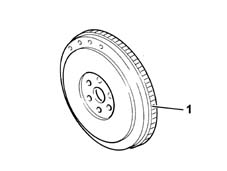
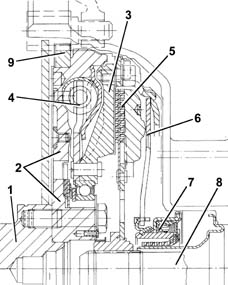
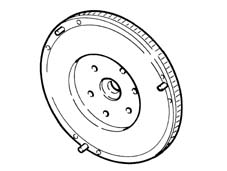
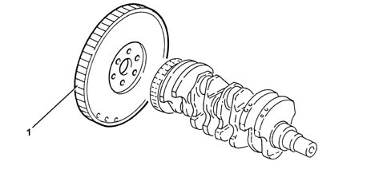
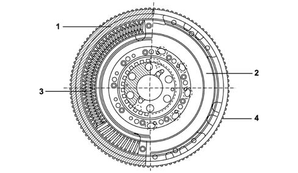
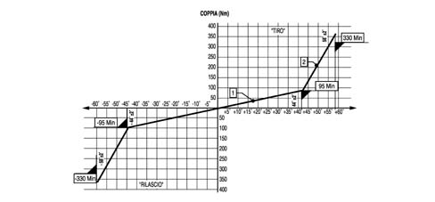
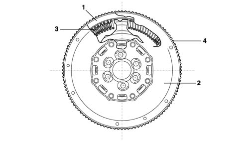
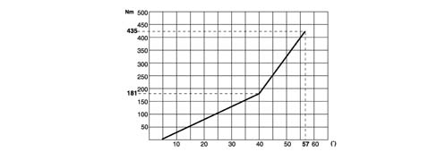

1024B engine flywheel
- Path
- Descriptions > 10 ENGINE > 1024 CRANKSHAFT AND FLYWHEEL > 1024B engine flywheel
- Kind
- system description
- Applies to
- engines: 1.6 TS , 1.8 TS, 2.0 JTS, 2.5 V6, 3.2 V6, 1.9 JTD 8v , 1.9 JTD 16v, 2.0 JTS, 2.4 JTD 10v, 2.4 JTD 20v; all production periods
- Interactive page
- https://sloeber94.github.io/elrnDB-a156/en/#/3232827
Applies to: engines: 1.6 TS , 1.8 TS; all production periods
Made from cast iron with a press-fitted, hardened steel ring gear (1) and balanced

Applies to: engines: 2.5 V6; all production periods
In the twin mass DVA (twin shock absorber flywheel) system, one is fixed to the crankshaft and one to the gearbox main shaft with a flexible damping system in between.
The resonance points which, in traditional systems, are located at 800 and 2200 rpm, have been moved towards lower rotation speeds, outside of the usage range.
The clutch engagement, positioned between the twin flywheel and the gearbox, is made up of a rigid disc (without springs) which, on account of reduced inertia, improves the manoeuvrability of the gearbox.

1, Crankshaft 2, Mass fixed to the crankshaft 3, Mass fixed to the gearbox main shaft 4, Flexible damping system 5, Clutch disc 6, Flexible coupling spring 7, Thrust bearing 8, Gearbox main shaft 9, Ring gear
Applies to: engines: 3.2 V6; all production periods
CONSTRUCTION FEATURES
Made from cast iron with a press-fitted, hardened steel ring gear and balanced
Applies to: engines: 1.9 JTD 8v ; all production periods
Made from cast iron with a press-fitted, hardened steel ring gear and balanced

Applies to: engines: 2.4 JTD 10v; all production periods
In the twin mass DVA (twin shock absorber flywheel) system, one is fixed to the crankshaft and one to the gearbox main shaft with a flexible damping system in between.
The resonance points which, in traditional systems, are located at 800 and 2200 rpm, have been moved towards lower rotation speeds, outside of the usage range.
The clutch engagement, positioned between the twin flywheel and the gearbox, is made up of a rigid disc (without springs) which, on account of reduced inertia, improves the manoeuvrability of the gearbox.
1, Crankshaft 2, Mass fixed to the crankshaft 3, Mass fixed to the gearbox main shaft 4, Flexible damping system 5, Clutch disc 6, Flexible coupling spring 7, Thrust bearing 8, Gearbox main shaft 9, Ring gear
Applies to: engines: 2.0 JTS, 2.0 JTS; all production periods
CONSTRUCTION FEATURES
Made from cast iron with a press-fitted, hardened steel ring gear (1) and balanced

Applies to: engines: 1.9 JTD 16v; all production periods
CONSTRUCTION FEATURES
Twin flywheel shock absorber (DVA) This flywheel consists of two masses, one of which is fixed to the crankshaft and the other to the gearbox main shaft through the clutch plate. There is a twin ramp flexible damping system between these two masses produced through two pairs of springs whose intervention is differentiated according to the torque transmitted.
The clutch engagement, positioned between the twin flywheel and the gearbox, is made up of a rigid disc (without springs) which, on account of reduced inertia, improves the manoeuvrability of the gearbox.

1 - Mass fixed to the crankshaft 2 - Mass fixed to the gearbox main shaft 3 - Flexible damping system 4 - Ring gear
Diagram showing operation of twin ramp flexible damping system

Applies to: engines: 2.4 JTD 20v; all production periods
COMPONENT DESCRIPTION
ENGINE FLYWHEEL
Specifcations
Type
Twin flywheel shock absorber (DVA) This flywheel consists of two masses, one of which is fixed to the crankshaft and the other to the gearbox main shaft through the clutch plate. There is a twin ramp flexible damping system between these two masses produced through two pairs of springs whose intervention is differentiated according to the torque transmitted.
The clutch engagement, positioned between the twin flywheel and the gearbox, is made up of a rigid disc (without springs) which, on account of reduced inertia, improves the manoeuvrability of the gearbox.

1. Mass in one piece with the engine 2. Mass in one piece with the gearbox main shaft 3. Flexible damping system 4. Ring gear
DIAGRAM SHOWING OPERATION OF TWIN RAMP FLEXIBLE DAMPING SYSTEM
